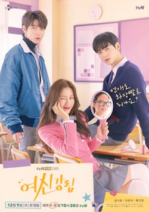
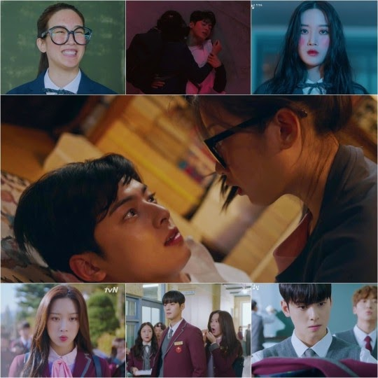
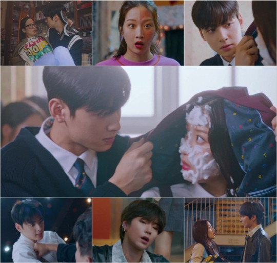
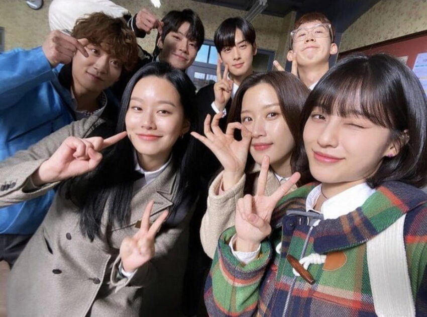

Seja bem vindo ao site da melhor série de todos os tempos.
Im Joo Kyung (Moon Ga Young) é uma estudante colegial super animada e positiva sobre a maioria das coisas – exceto sua aparência! Ela odeia a ideia de ser vista em público sem maquiagem, mas felizmente se tornou uma especialista autodidata em maquiagem com uma pequena ajuda de uma abundância de vídeos tutoriais na internet.
O que ela aprendeu online transformou a sua vida. Na escola ela é conhecida como uma das meninas mais bonitas da turma – embora ela secretamente viva com medo de seus colegas de escola descobrirem sua aparência por trás da maquiagem! Na verdade, há apenas uma pessoa da escola que já a viu sem a sua "máscara" – Lee Su Ho (Cha Eun Woo).
Ele é um dos alunos com as notas mais altas e com habilidades de basquete impressionante. Ele também é incrivelmente bonito e muitas de suas colegas têm uma queda por ele. Contudo, Lee Su Ho guarda alguns segredos sombrios de seu passado e rejeita atenção nas aulas.
Lentamente esses dois indivíduos acabam sentindo atração um pelo outro – e aprendem mais sobre os segredos um do outro! Esse drama foi baseado em um desenho online de longa duração com o mesmo nome, escrito por Yaongyi.
"Beleza Verdadeira" é uma série dramática sul coreana de 2020 dirigida por Kim Sang Hyub.
 A história por si só é muito clichê e previsível, e não é porque ela é baseada numa webtoon que todo mundo saberia o que ia acontecer (até porque o drama tomou um rumo totalmente diferente), mas foi porque a história em si traz consigo elementos já conhecidos e que sempre funcionam. Ela ser clichê e previsível não é um defeito, isso faz dela um drama gostoso de se acompanhar, algo mais leve e seguro.
Os personagens foram construídos de forma que era impossível não gostar deles. Não digo somente dos protagonistas, já que Ju Kyung era a nerd amante de quadrinhos mais engraçada e vergonha alheia que já vi, mas digo também dos secundários, amigos do SeoJun contribuíram para cenas hilárias, o casal mais apaixonado da turma trazia à tona todo ardor da adolescência, aquela paixão chiclete. Por fim, é impossível você não se sentir como se fizesse parte do grupo de amigos. (sem contar a família dela que gera um sentimento de amor – ódio a todo momento)
Ainda que grande parte das pessoas que acompanharam (que eu vi) tenham focado na briga dos shipps; “com quem Ju Kyung iria ficar? Suho ou Seojun?”; O drama vai além disso, muito além de casais, shipps e dramas adolescentes.
Como o próprio título dessa crítica já diz, esse drama é sobre a descoberta do amor próprio. Nós acompanhamos em True Beauty a história de evolução de Ju Kyung, como ela aprendeu a lidar com a sua originalidade, como ela descobriu ser uma mulher que ama a arte de se maquiar, não para se esconder e sim pelo prazer da arte.
Os amores que a rodearam serviram como seu suporte, o suporte de sua caminhada longa e árdua que ela não poderia fazer sozinha. Durante essa caminhada, ela conhece pessoas que também se escondiam atrás de suas próprias maquiagens.
Ela descobriu que não estava sozinha, e nem deveria estar. True Beauty é sobre isso, sobre aceitação, a importância de uma rede de amor e apoio e principalmente a confiança de ser quem você é.
O trio mais belo S2
Trio True BeautySe você se interessou em assistir acesse o site abaixo:
Assista True Beauty